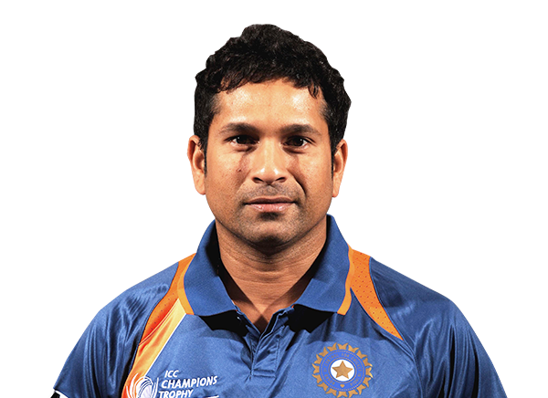
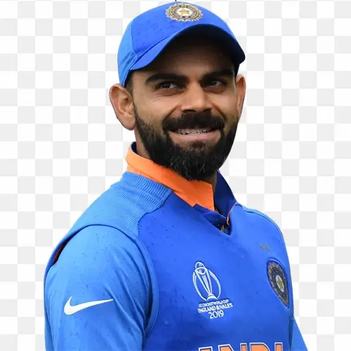
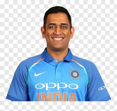
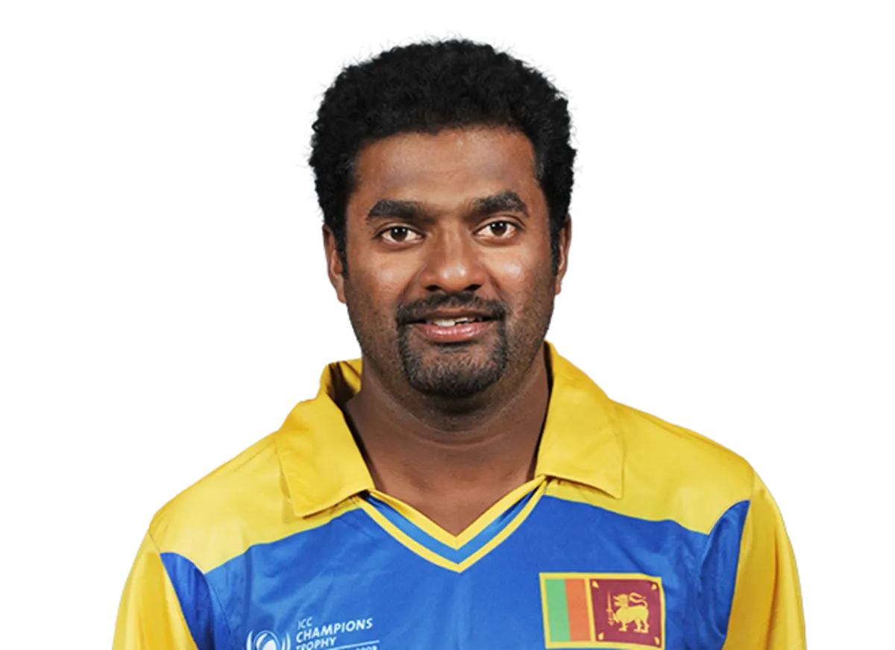
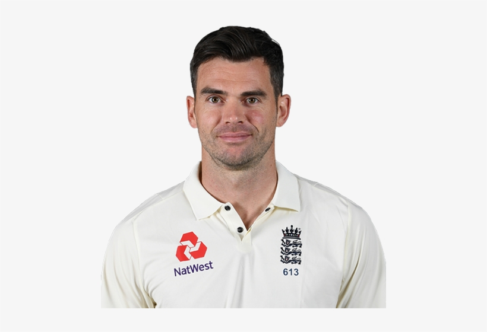
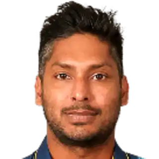
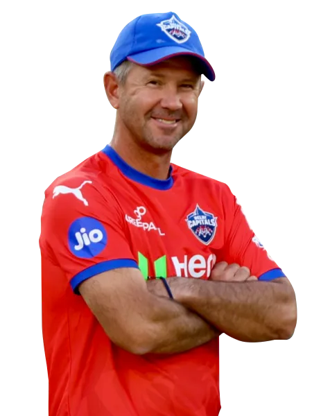
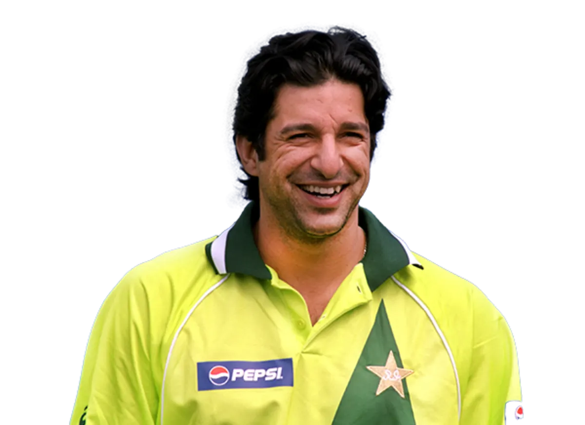
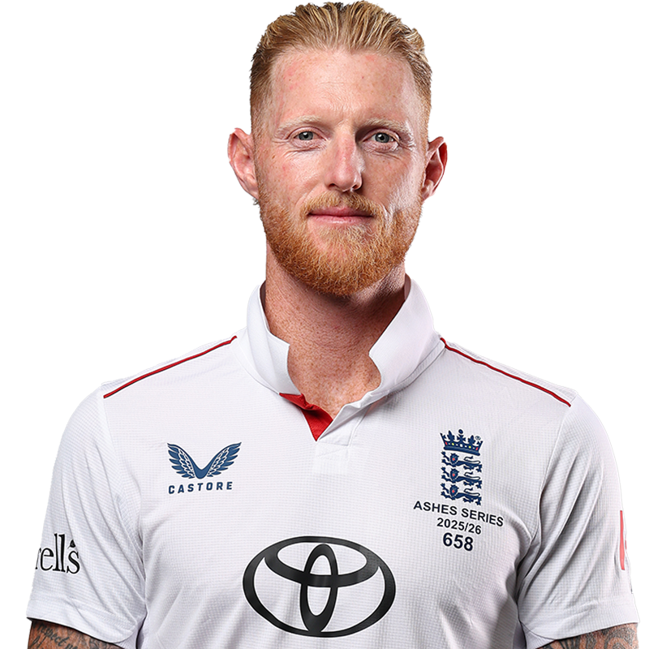
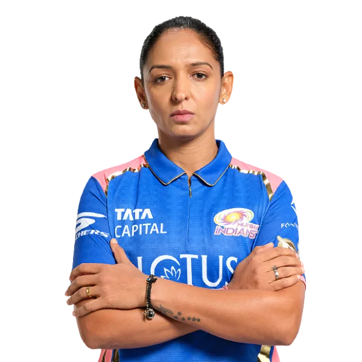

Legendary Player Profiles

Sachin Tendulkar (India)
Role: Top-order batter | Tests: 15,921 runs (record) | ODIs: 18,426 runs (record) | 100 international centuries
Achievements: 2011 World Cup winner, ICC Cricketer of the Year 2010, Padma Vibhushan.

Virat Kohli (India)
Role: Batter | ODI Runs: 13,906+ | Centuries: 80 international | 2024 T20 WC winner
Achievements: ICC Cricketer of the Decade, 2011 & 2024 World Cup winner.

MS Dhoni (India)
Role: Wicketkeeper-batter | Captaincy: Only captain to win all three ICC trophies (2007 T20 WC, 2011 ODI WC, 2013 CT)
IPL titles: 5 with CSK | 2011 WC Final MOTM: 91*

Muttiah Muralitharan (Sri Lanka)
Role: Spin bowler | Test Wickets: 800 (world record) | ODI Wickets: 534 (world record)
Achievements: 1996 World Cup winner, Padma Shri awardee.

James Anderson (England)
Role: Fast bowler | Test Wickets: 704 (most by a pacer) | Debut: 2003
Achievements: Most Test wickets for England, 2010 T20 World Cup winner.

Kumar Sangakkara (Sri Lanka)
Role: Wicketkeeper-batter | Tests: 12,400 runs | ODIs: 14,234 runs
Achievements: 2014 T20 World Cup winner (MOTM final), ICC Cricketer of the Year 2012.

Ricky Ponting (Australia)
Role: Batter | Tests: 13,378 runs | ODIs: 13,704 runs
Achievements: 3-time World Cup winner (1999, 2003, 2007 as captain).

Wasim Akram (Pakistan)
Role: Fast bowler | ODI Wickets: 502 | Test Wickets: 414
Achievements: 1992 World Cup winner (MOTM final), pioneer of reverse swing.

Ben Stokes (England)
Role: All-rounder | Signature: 2019 World Cup final hero (84*), 2019 Ashes Headingley 135*
Achievements: 2019 World Cup winner, 2022 T20 World Cup winner.

Harmanpreet Kaur (India)
Role: All-rounder | Captain: India's first Women's ODI World Cup winner (2025) | 171* vs AUS in 2017 WC semis
Achievements: 2025 ODI World Cup winning captain, Arjuna Awardee.